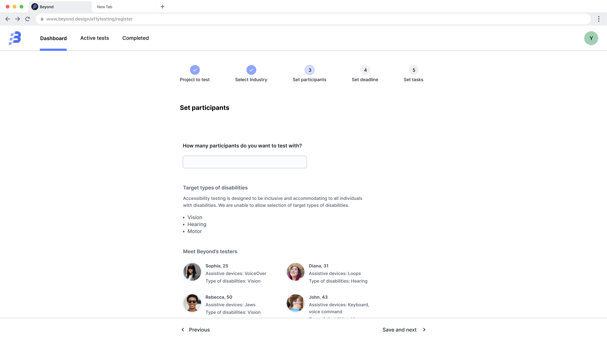

Problem
Designers without disabilities can’t predict every barrier, assistive-tech use is highly individual. The same screen reader behaves differently with different users’ rotor settings, browse-mode preferences, and verbosity. Two AT users with the same nominal tooling navigate the same page in materially different ways.
Testing only with non-disabled team members misses entire categories of failure. “We tested with screen readers” usually means “we used VoiceOver ourselves for ten minutes.” That’s a useful smoke test, not a validation.
Pattern
- Recruit users who actually use assistive technology daily, not occasional users. Use established research panels (Fable, Knowbility, Disabled List) so recruitment doesn’t fall on the team’s personal network.
- Pay at standard research rates. Research participation is paid work, not volunteer service. Match what you’d pay non-disabled testers for the same time.
- Frame tasks neutrally. Don’t ask “Can you complete X?” (yes/no with a leading frame). Ask “Try to accomplish Y” (open observation). Avoid the word “easy.”
- Run unmoderated where possible. An unmoderated session captures friction the moderated session smooths over, in moderation, the moderator unconsciously coaches.
- Observe without intervening. If a participant gets stuck, note it. Don’t rescue. Stuck is the data.
- Analyze for friction and frustration, not just task-completion rates. A user who completes the task but spends three minutes navigating a misordered DOM has surfaced a failure even if the rate says success.
Visual examples

Process
This is a process pattern. The deliverable is a study report attached to the design or release decision.
1. Recruit
- Channel: Fable / Knowbility / Disabled List / paid panel
- Criteria: AT used daily, not occasionally
- N: 5–8 participants per primary AT category
- Compensation: standard research rate (match non-disabled rate)
2. Set up
- Test build: same artifact non-disabled testers see
- Devices: participants' own; do NOT remote-control
- Tasks: 3–5 per session; 60–90 minutes total
- Framing: "Try to..." not "Can you..."
3. Moderate (or unmoderated)
- Unmoderated by default; moderated only when consent specifies
- If moderated: do not coach. Log stuck moments without rescuing.
- Record (with consent) for review; transcripts faster than playback
4. Analyze
- Friction inventory, not just success rates
- Categorize by AT category, severity, and pattern (cross-link to library)
- Prioritize fixes that block, not fixes that annoy
- Share findings with participants who opted inDocumentation
Attach the study to the release decision. Document recruitment criteria (so the validation is repeatable) and the friction inventory with severity (so prioritization is auditable).
Study: [name]
Run: 2026-MM-DD
N: [count] across [AT categories]
Compensation: [rate]
Tasks: [list]
Findings: [friction inventory by severity]
Pattern hits: [cross-links to pattern library]
Decision: ship / ship-with-fixes / holdWCAG mapping
Accessibility testing with people with disabilities is a process pattern that complements WCAG-conformance work. WCAG covers the technical surface; lived-experience testing covers the gap between “technically conformant” and “actually usable.”
It does not map to a single success criterion. It is the validation step that confirms (or refutes) every conformance claim made elsewhere.
Related patterns
- Accessibility-mode validation walkthrough (#09), designer-runnable pre-handoff; this pattern picks up after handoff with the actual user